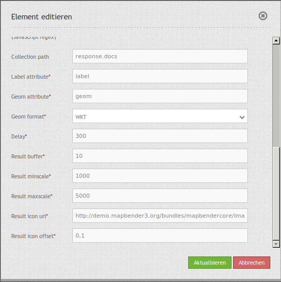
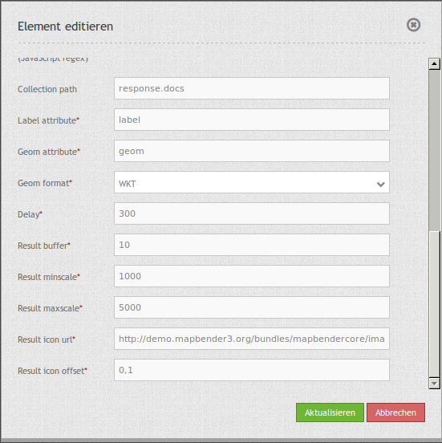

SimpleSearch¶
SimpleSearch offers a one-step solution for geo-data querying, powered by Solr for example. Giving only one input field which can be directly embedded into the toolbar, it will send the entered search term to a configurable URL where it expects to receive a JSON-formatted data back which includes a label and a geometry attribute for each entry.
Geometry data can be encoded as WKT or in GeoJSON format.

Configuration¶
 

{kind=link}
- Title: Title of the element. The title will be listed in “Layouts” and allows to distinguish between different buttons. It will be indicated if “Show label” is activated.
- Query URL: Solr URL for the search (e.g.
http://localhost:8080/solr/core0/select?wt=json&indent=true). - Query URL key: The query parameter key to append (e.g.
q). - Query Whitespace replacement pattern: Pattern for replacing white spaces.
- Query key format: Simple search format (e.g.
%s). - Token search/ replace (JavaScript regex): Tokenizer split/ search/ replace regexp.
- Token, e.g.:
[^a-zA-Z0-9äöüÄÖÜß] - Token search, e.g.:
([a-zA-ZäöüÄÖÜß]{3,}) - Token replace, e.g.:
$1*
- Token, e.g.:
- Collection path: Can be a dotted attribute path to extract from the query result (e.g.
response.docs). - Label attribute: Name of the attribute to use for entry labeling (e.g.
label). - Geom attribute: Name of the geometry data attribute (e.g.
geom). - Geom format: geometry data format, can be WKT or GeoJSON (e.g.
WKT). - Delay: Autocomplete delay. Use 0 to disable autocomplete (e.g.
300). - Result buffer: buffer result geometry with this (map units) before zooming (e.g.
10). - Result minscale/ maxscale: scale restrictions for zooming, ~ for none (e.g.
1000und5000). - Result icon url: icon to display as result marker (e.g.
http://demo.mapbender3.org/bundles/mapbendercore/image/pin_red.png). - Result icon offset: Offset x and y for the icon (e.g.
0,0).
YAML-Definition¶
query_url: http://example.com/solr/core/0/select?wt=json&indent=true&rows=8 # Example Solr URL
query_key: q # The query parameter key to append
query_ws_replace: # Pattern for replacing white spaces.
query_format: '%s' # Simple search format.
token_regex: [^a-zA-Z0-9äöüÄÖÜß] # Tokenizer split regexp.
token_regex_in: ([a-zA-ZäöüÄÖÜß]{3,}) # Tokenizer search regexp.
token_regex_out: '$1*' # Tokenizer replace regexp.
collection_path: response.docs # Can be a dotted attribute path to extract from the query result.
label_attribute: label # Name of the attribute to use for entry labeling
geom_attribute: geom # Name of the geometry data attribute
geom_format: WKT # geometry data format, can be WKT or GeoJSON
delay: 300 # Autocomplete delay. Use 0 to disable autocomplete.
result_buffer: 50 # buffer result geometry with this (map units) before zooming
result_minscale: 1000 # scale restrictions for zooming, ~ for none
result_maxscale: 5000
result_icon_url: http://demo.mapbender3.org/bundles/mapbendercore/image/pin_red.png # icon to display as result marker
result_icon_offset: -6,-38 # Offset x and y for the icon
How to setup Solr¶
Installation¶
Download Apache Solr and extract it to any folder. After successfully extracting the file Solr can be installed as a service in a Linux system by calling solr/bin/install_solr_service.sh.
- Download: http://lucene.apache.org/solr/
- Documentation: http://lucene.apache.org/solr/resources.html#documentation
- Quickstart: http://lucene.apache.org/solr/quickstart.html
Installing Apache Solr via the terminal f.e. in the data directory:
cd /data
wget http://apache.lauf-forum.at/lucene/solr/5.4.1/solr-5.4.1.tgz
tar -zxvf solr-5.4.1.tgz
cd solr-5.4.1/
Apache Solr runs of Java 7 or greater, Java 8 is verified to be compatible and may bring some performance improvements. When using Oracle Java 7 or OpenJDK 7, be sure to not use the GA build 147 or update versions u40, u45 and u51! We recommend using u55 or later.
Start and stop¶
You can start and stop Solr via the terminal by the following commands:
Start Solr:
/data/solr-5.4.1/bin/solr start -s /data/solr-5.4.1/server/solr
Stop Solr:
/data/solr-5.4.1/bin/solr stop -all
- Solr-Administration page:
- for the management of the cores
- http://localhost:8983/solr
Solr-Core¶
The Solr home folder is the area in which the various Solr-Cores for the search are located.
File: solr-5.4.1/server/solr/solr.xml
Enter the following XML-block in the file:
<?xml version="1.0" encoding="UTF-8" ?>
<solr></solr>
The solr.xml identifies the directory as a Solr-folder containing the cores. Here you can store your own Solr cores. However, since we want to operate independently of the Solr version we create a separate directory with the cores. If you want to skip this step, then perform the following instructions in the directory solr-5.4.1/server/solr.
Your Solr-Core¶
For the cores create a folder under data/solr_data and copy the solr.yml from the directory /data/solr-5.4.1/server/solr in this directory (data/solr_data/solr.yml). Then create a new folder for your core. For this documentation we used the core places among data/solr_data/places.
Each core consists of the three configuration files:
- core.properties
- By core.properties the core of Solr is recognized as a core
- solrconfig.xml
- The solrconfig.xml describes the features of the core
- schema.xml
- The schema.xml describes the construction of the index
Copy the configuration files from the directory /data/solr-5.4.1/server/solr/configsets/basic_configs in the directiory of the core under data/solr_data/places or insert it on your own with the following contents:
Adaptation of configuration files under /data/solr-5.4.1/server/solr/configsets/basic_configs/conf:
- core.properties
- data/solr_data/places/core.properties
- Adapting core.properties:
- Put in the following configuration block:
name=places
shard=${shard:}
collection=${collection:places}
config=${solrconfig:solrconfig.xml}
schema=${schema:schema.xml}
coreNodeName=${coreNodeName:}
- solrconfig.xml
- /data/solr_data/places/conf/solrconfig.xml
- Adapting solrconfig.xml:
- Put in the following configuration block:
<?xml version="1.0" encoding="UTF-8"?>
<config>
<luceneMatchVersion>5.4.0</luceneMatchVersion>
<dataDir>${solr.data.dir:}</dataDir>
<schemaFactory class="ClassicIndexSchemaFactory" />
<!-- RequestHandler to use the Index -->
<requestHandler name="/select" class="solr.SearchHandler" />
<!-- RequestHandler to identify Data -->
<requestHandler name="/update" class="solr.UpdateRequestHandler" />
</config>
- schema.xml
- /data/solr_data/places/conf/schema.xml
- Adapting schema.xml:
- Put in the following configuration block:
<?xml version="1.0" encoding="UTF-8" ?>
<schema name="places" version="1.5">
<!-- FIELDS -->
<field indexed="true" multiValued="false" name="id" required="true" stored="true" type="string"/>
<field indexed="true" multiValued="false" name="text" required="true" stored="true" type="string"/>
<uniqueKey>id</uniqueKey>
<!-- FIELD TYPES -->
<fieldType class="solr.StrField" name="string" sortMissingLast="true"/>
</schema>
If you want to save certain words as Stopwords, you can save them as a list in a file under /data/solr_data/places/conf/stopwords.txt.
Now you can restart Solr with your own core. Use the command we mentioned above to stop and then the following customized command to start the with the new Core:
- Start Solr:
/data/solr-5.4.1/bin/solr start -s /data/solr_data
Solr example¶
The directiory /solr-5.4.1/example contains Solr examples. Each example is contained in a separate directory. To run a specific example, do:
bin/solr -e <EXAMPLE> where <EXAMPLE> is one of:
cloud : SolrCloud example
dih : Data Import Handler (rdbms, mail, rss, tika)
schemaless : Schema-less example (schema is inferred from data during indexing)
techproducts : Kitchen sink example providing comprehensive examples of Solr features
To test this function run the following command in the terminal:
/data/solr-5.4.1/bin/solr start -e techproducts
and go to http://localhost:8983/solr.
/data/solr-5.4.1/server/solr:
- Default solr.solr.home directory where Solr will create core directories; must contain solr.xml
/data/solr-5.4.1/server/solr/configsets:
- Directories containing different configuration options for running Solr.
- basic_configs: Bare minimum configuration settings needed to run Solr.
- example is under /data/solr-5.4.1/server/solr/configsets/basic_configs
Indexing Solr XML¶
Use the example data in /solr-5.4.1./example/exampledocs/*.xml or your own data to index the example Solr XML files.
For the indexing, you have two options:
- DataImportHandler
- establishing a PostgreSQL data connection
- UpdateHandler
- to send data via HTTP post directly to Solr
DataImportHandler¶
Import records from a PostgreSQL-database using the Data Import Handler.
Adaptation of the Data Connection in the configutation files under data/solr_data/places/config:
- solrconfig.xml
- data-config.xml
- configurate the PostgreSQL data connection:
<?xml version="1.0" encoding="UTF-8"?>
<dataConfig>
<dataSource
type="JdbcDataSource"
driver="org.postgresql.Driver"
readOnly="true"
autoCommit="false"
transactionIsolation="TRANSACTION_READ_COMMITTED"
holdability="CLOSE_CURSORS_AT_COMMIT"
url="jdbc:postgresql://localhost:5432/databasename"
user="postgres"
password=" " />
<document>
<entity name="places" query="SELECT * FROM schema.tablee">
<field column="gid" name="gid" />
<field column="text" name="text" />
<field column="label" name="label" />
<field column="geom" name="geom" />
</entity>
</document>
</dataConfig>
- download matching PostgreSQL-driver:
- https://jdbc.postgresql.org/download.html
cd /data/solr_data/places/
wget https://jdbc.postgresql.org/download/postgresql-9.1-903.jdbc4.jar
UpdateHandler¶
You must adjust the UpdateHandler in the solrconfig.xml under data/solr_data/places/config, then you can send documents with the following command to Solr.
Example csv:
/opt/solr/bin/post -c places /opt/training/data/germany.csv
Solr-scheme¶
The Solr-scheme consists of the following parts:
- Fields (field)
- Field types (fieldType)
- Specifying an ID-Field by uniqueKey
Secure Jetty¶
In order to secure the Apache Solr outward you must configure the Jetty Security.
- Release of certain IP addresses to access the Jetti
- Configuration under solr/etc/jetty.xml
<Set name="host"><SystemProperty name="jetty.host" /></Set>
<Set name="port"><SystemProperty name="jetty.port" default="8983"/></Set>
Class, Widget & Style¶
- Class: Mapbender\CoreBundle\Element\SimpleSearch
- Widget: mapbender.element.simplesearch.js
HTTP Callbacks¶
- /search: Widget proxy which then queries configured URL. In dev-mode the final query URL will be returned as a x-mapbender-simplesearch-url header for easier debugging.
JavaScript API¶
None.
JavaScript Signals¶
None.